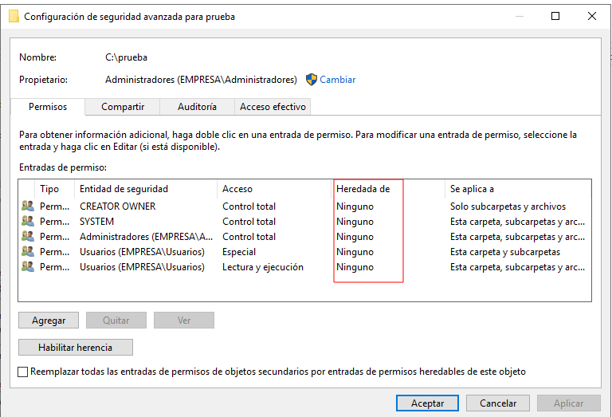
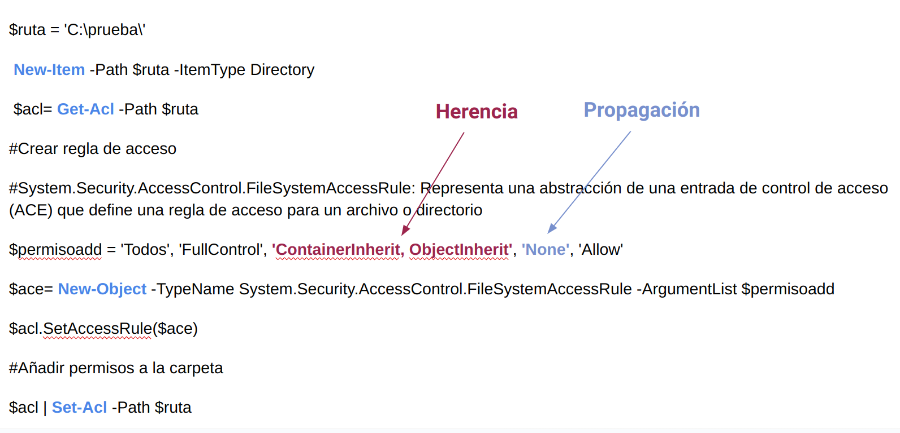

UT7. PowerShell - Directorio Activo
1 Gestión de usuarios de Active Directory con PowerShell¶
1.1 Creación de cuentas de usuario¶
El cmdlet New-ADUser crea un usuario en el directorio activo.
Ejemplo:
New-ADUser -Name "Maria Garcia" -Path "CN=Users,DC=Empresa,DC=Local" -SamAccountName "mariag" -UserPrincipalName "mariag@empresa.local" -AccountPassword (ConvertTo-SecureString "aso2023." -AsPlainText -Force) -GivenName "Maria" -Surname "Garcia" -ChangePasswordAtLogon $true -Enabled $true
Explicación detallada:
-
New-ADUser: Este cmdlet se utiliza para crear un nuevo usuario en Active Directory. -
-Name "Maria Garcia": Especifica el nombre de visualización del usuario. -
-Path "CN=Users,DC=EMPRESA,DC=LOCAL": Especifica la ubicación (unidad organizativa) donde se creará el nuevo usuario. -
-SamAccountName "mariag": Especifica el nombre de usuario (sAMAccountName) para el usuario. Asegúrate de que sea único dentro de la ruta especificada. -
-UserPrincipalName "mariag@EMPRESA.LOCAL": Especifica el Nombre Principal de Usuario (UPN) para el usuario. El UPN también debe ser único. -
-AccountPassword (ConvertTo-SecureString "aso2023." -AsPlainText -Force): Establece la contraseña inicial para el usuario. En este ejemplo, la contraseña es "aso2023." -
-GivenName "Maria": Especifica el primer nombre del usuario. -
-Surname "Garcia": Especifica el apellido del usuario. -
-ChangePasswordAtLogon $true: Obliga al usuario a cambiar su contraseña en el próximo inicio de sesión. Esta es una buena práctica de seguridad para la configuración inicial de la contraseña. -
-Enabled $true: Habilita la cuenta de usuario. Si deseas crear la cuenta pero dejarla deshabilitada inicialmente, puedes establecer esto en$false.
1.2 Eliminación de usuarios¶
El cmdlet Remove-ADUser elimina un usuario del directorio activo.
Ejemplo:
1.3 Deshabilitar una cuenta de usuario¶
El cmdlet Disable-ADAccount deshabilita una cuenta de usuario del directorio activo
Ejemplo:
1.4 Modificación de cuentas de usuario¶
Podemos modificar alguna propiedad de la cuenta de usuario a través del cmdlet Set-ADUser
1.5 Consultar usuarios¶
El cmdlet Get-ADUser nos pemite consulltar las cuentas de usuario.
Para visualizar ejemplos de cómo utilizar el comando:
Aquí tienes algunos ejemplos de cómo puedes utilizarlo:
- Obtener información de un usuario específico por su nombre de usuario:
Este comando obtiene información sobre el usuario con el nombre de usuario "mariag".
- Obtener una lista de todos los usuarios en un dominio específico:
Este comando recupera una lista de todos los usuarios dentro de la Unidad Organizativa (OU) "Usuarios" en el dominio "MiDominio.com".
- Obtener usuarios con un atributo específico:
Este comando busca y muestra todos los usuarios cuya dirección de correo electrónico contiene "@miempresa.com".
- Obtener usuarios que pertenecen a un grupo específico:
Este comando obtiene una lista de usuarios que son miembros del grupo especificado ("GroupName").
- Obtener una lista de todos los usuarios activos:
Este comando recupera una lista de todos los usuarios que están habilitados en Active Directory, es decir, cuentas de usuario activas.
2. Gestión de grupos¶
2.1 Creación de grupos¶
El comando New-ADGroup crea un nuevo grupo en el dominio especificado
Ejemplo:
New-ADGroup -Name "Profesores" -GroupCategory Security -GroupScope Global -Path "CN=Users,DC=EMPRESA,DC=LOCAL"
2.2 Eliminación de grupos¶
El cmdlet Remove-ADGroup elimina un grupo del dominio.
2.3 Modificación de grupos¶
El cmdlet Set-ADGroup modifica las propiedades de un grupo del dominio.
2.4 Consultar grupos¶
El cmdlet Get-ADGroup muestra todas las propiedades de un grupo del dominio.
2.5 Añadir usuarios a un grupo del dominio¶
El cmdlet Add-ADGroupMember añade usuarios al grupo especificado
Ejemplo:
2.6 Quitar usuarios de un grupo del dominio¶
El cmdlet Remove-ADGroupMember quita usuarios del grupo especificado
Ejemplo:
3.7 Consultar miembros de un grupo
El cmdlet Get-ADGroupMember nos permite consultar
3. Gestión de unidades organizativas de Active Directory con PowerShell¶
3.1 Creación de unidades organizativas¶
El cmdlet New-ADOrganizationalUnit crea una unidad organizativa.
Ejemplo:
New-ADOrganizationalUnit -Name "Finanzas" -Path "OU=EMPRESA,DC=EMPRESA,DC=LOCAL" -Description "Unidad de finanzas"
3.2 Eliminación de unidades organizativas¶
El cmdlet Remove_ADOrganizationalUnit elimina una unidad organizativa.
Remove-ADOrganizationalUnit -Identity "OU=INFORMATICA,DC=IESELCAMINAS,DC=LOCAL" -Recursive -Confirm:$False
Explicación detallada:
-
Remove-ADOrganizationalUnit: Este es el cmdlet (comando de PowerShell) utilizado para eliminar una Unidad Organizativa de Active Directory. -
-Identity "OU=INFORMATICA,DC=IESELCAMINAS,DC=LOCAL": Esta parte especifica la identidad de la OU que deseas eliminar. En este caso, es "OU=INFORMATICA,DC=IESELCAMINAS,DC=LOCAL". -Recursive: Este interruptor indica que deseas eliminar la OU y todos sus objetos secundarios (sub-OUs, usuarios, grupos, etc.) de forma recursiva.-Confirm:$False: Esto se utiliza para desactivar la solicitud de confirmación. Cuando se establece en$False, significa que no se te pedirá confirmación antes de que se elimine la OU. Ten precaución al usar esta opción, ya que puede provocar eliminaciones accidentales.
4. Recursos compartidos¶
Los cmdlets para trabajar con recursos compartidos se encuentran dentro del módulo SmbShare
A los recursos compartidos se les puede asociar los distintos tipos de permisos:
- Control Total (FullAccess) : Todas las operaciones y cambio de permisos.
- Cambiar (ChangeAccess): Permite crear, modificar y borrar carpetas y archivos.
- Lectura (ReadAccess): Sólo permite la lectura y ejecución de archivos.
4.1 Mostrar información de recurso compartido¶
El cmdlet Get-SmbShare (gsmbs) devuelve los recursos compartidos del sistema.
Para mostrar los datos de un recurso compartido especificado:
# Muestra información del recurso compartido datos
Get-SmbShare -Name datos
# Muestra información del recurso compartido datos en formato lista (Format-List, alias fl)
Get-SmbShare -Name datos | fl
4.2 Crear recurso compartido¶
El cmdlet New-SmbShare (nsmbs) crea un recurso compartido.
# creación de un recurso compartido sin especificar
New-SmbShare -Path C:\datos -Name datos
#Creación del recurso compartido datos, de forma que al usuario profesor le damos todos los permisos y al usuario alumno, solo lectura
New-SmbShare -Path C:\datos -Name datos -FullAccess profesor -ReadAccess alumno
4.3 Eliminar recurso compartido¶
El cmdlet Remove-SmbShare (rsmbs) elimina un recurso compartido. La propiedad -Force evita el mensaje de confirmación de eliminación.
4.4 Administrar permisos de un recurso compartido¶
Los cmdlets Grant-SmbShareAccess y Revoke-SmbShareAccess son cmdlets de PowerShell que se utilizan para administrar los permisos de acceso a carpetas compartidas (shares) en un entorno de red SMB (Server Message Block).
El cmdlet Grant-SmbShareAccess(grsmba) permite otorgar permisos de acceso a una carpeta compartida.
El cmdlet Revoke-SmbShareAccess se utiliza para revocar o quitar los permisos de acceso a una carpeta compartida.
Ejemplo 1: Añadir el permiso de control total al usuario profesor sobre el recurso datos.
Ejemplo 2 : Quitar los permisos que tiene el usuario alumno sobre el recurso datos.
5. Permisos NTFS¶
Los permisos NTFS (permisos básicos) se componen de cinco niveles de autorización:
-
Control total: un usuario que tenga este nivel de permisos puede modificar, añadir, desplazar o suprimir carpetas y archivos. También puede cambiar el permiso de acceso.
-
Modificación: el usuario puede visualizar y modificar los archivos, así como sus propiedades. También puede añadir y suprimir archivos.
-
Lectura y ejecución: el usuario puede visualizar el contenido de los archivos y lanzar archivos ejecutables y scripts.
-
Lectura: el usuario puede visualizar el contenido de los archivos.
-
Escritura: el usuario puede escribir en un archivo y añadir nuevos archivos en la carpeta.
Los permisos NTFS se pueden heredar (provienen de la carpeta padre) o pueden ser explícitos (configurados individualmente). De esta manera en cada ACE (Access Control Entry) configurada en el ACL (Access Control List) se puede definir si el permiso debe ser de tipo "Permitir" o "Denegar".
Información
Debemos tener muy claro estos dos términos:
- ACL: lista de permisos completa del objeto.
- ACE: permiso concreto dentro de la lista de permisos.
La gestión de los permisos NTFS con PowerShell puede hacerse con dos cmdlets:
- Get-Acl: permite recuperar los permisos configurados en un recurso (carpetas y archivos).
- Set-Acl: permite modificar los permisos de un recurso.
Consultar los permisos de un recurso en PowerShell¶
- El cmdlet Get-Acl permite obtener los permisos declarados en un recurso, como una carpeta, un archivo o una clave de registro. El cmdlet se puede usar simplemente con el parámetro -Path:
| Parámetro | Descripción |
|---|---|
| -Path |
Indica el camino de acceso al recurso. |
En lugar de Format-List, podemos utilizar el alias fl
Ejemplo 1: Obtener los permisos del fichero prueba.txt y visualizar en formato tabla.

Ejemplo 2: Obtener los permisos del directorio permisos y visualizar en formato tabla

Como puede observarse, es la misma información que podemos recopilar en la GUI:

Definir los permisos de un recurso en PowerShell¶
- El cmdlet Set-Acl permite definir los permisos en un recurso. Para usar este cmdlet y poder definir estos permisos, hay que utilizar los descriptores de seguridad usando Get-Acl, y aplicarlos después en el recurso deseado.
| Parámetro | Descripción |
|---|---|
| -AclObject | Especifica los descriptores de seguridad que se van a aplicar |
| -Path |
Indica el camino de acceso al recurso. |
Ejemplo 1: Aplicar permisos NTFS en la carpeta prueba
$ruta = "C:\prueba\"
New-Item -Path $ruta -ItemType Directory
$acl= Get-Acl -Path $ruta
#Crear regla de acceso
<# System.Security.AccessControl.FileSystemAccessRule: Representa una abstracción de una entrada de control de acceso (ACE) que define una regla de acceso para un archivo o directorio #>
$permisoadd = @('Todos', 'FullControl', 'ContainerInherit, ObjectInherit', 'None', 'Allow')
$ace= New-Object -TypeName System.Security.AccessControl.FileSystemAccessRule -ArgumentList $permisoadd
$acl.SetAccessRule($ace)
#Añadir permisos a la carpeta
$acl | Set-Acl -Path $ruta
Deshabilitar o habilitar la herencia de permisos¶
SetAccessRuleProtection es un método que se utiliza en PowerShell para gestionar la herencia de reglas de acceso en objetos del sistema de archivos. Este método toma dos variables como argumentos:
- $isProtected: Este es el primer argumento que espera el método. Indica si deseas habilitar o deshabilitar la herencia de reglas de acceso para el objeto.
- Si el valor es
$true, significa que se deshabilitará la herencia, lo que significa que el objeto dejará de heredar las reglas de acceso de su contenedor padre. - Si el valor es
$false, se habilitará la herencia, lo que significa que el objeto heredará las reglas de acceso de su contenedor padre. - $PreserveInheritance: Este es el segundo argumento que espera el método. Indica si deseas preservar o eliminar las reglas de acceso heredadas al deshabilitar la herencia.
- Si
$PreserveInheritancees$true, se preservarán las reglas de acceso heredadas, lo que significa que se mantendrán en el objeto incluso después de deshabilitar la herencia. Esto permite que el objeto tenga sus propias reglas de acceso además de las heredadas. - Si
$PreserveInheritancees$false, se eliminarán las reglas de acceso heredadas al deshabilitar la herencia. Esto significa que el objeto solo tendrá las reglas de acceso que se definan directamente en él.
En resumen, SetAccessRuleProtection te permite controlar si un objeto hereda reglas de acceso y qué hacer con las reglas de acceso heredadas cuando se deshabilita la herencia.
Información
Esquema
| Comando | Explicación detallada |
|---|---|
| $acl.setAccessRuleProtection ($true,$true) | Deshabilita la herencia y conserva las reglas heredadas |
| $acl.setAccessRuleProtection ($true,$false) | Deshabilita la herencia y elimina todas las reglas heredadas |
| $acl.setAccessRuleProtection ($false, X ) | Habilitar la herencia |
Ejemplo1: Deshabilitar la herencia de la carpeta prueba utilizando la ruta física C:\prueba
# Paso 1: Obtener las reglas de acceso actuales
$Path = "C:\prueba"
$Acl = Get-Acl -Path $Path
# Mostrar las reglas de acceso antes de hacer cambios
Write-Host "Reglas de acceso antes de los cambios:"
$Acl.Access | Format-Table
# Paso 2: Deshabilitar la herencia y preservar las reglas de acceso
$Acl.SetAccessRuleProtection($true, $true)
# Aplicar los cambios
Set-Acl -Path $Path -AclObject $Acl
# Mostrar las reglas de acceso después de deshabilitar la herencia
Write-Host "Reglas de acceso después de deshabilitar la herencia:"
Get-Acl -Path $Path | Select-Object -ExpandProperty Access | Format-Table
Si observamos los permisos en modo gráfico, podemos ver como hemos deshabilitado la herencia.

Ejemplo2: Habilitar la herencia de la carpeta prueba
# Paso 1: Obtener las reglas de acceso actuales
$Path = "C:\prueba"
$Acl = Get-Acl -Path $Path
# Mostrar las reglas de acceso antes de hacer cambios
Write-Host "Reglas de acceso antes de los cambios:"
$Acl.Access | Format-Table
# Paso 2: Habilitar la herencia
$Acl.SetAccessRuleProtection($false, $true)
# Aplicar los cambios
Set-Acl -Path $Path -AclObject $Acl
# Mostrar las reglas de acceso después de shabilitar la herencia
Write-Host "Reglas de acceso después de h
Herencia en objetos secundarios¶
-
La herencia (Inheritance) es a qué tipo de objetos secundarios se aplica la ACE
-
ContainerInherit = Los objetos contenedores secundarios se heredan de la ACE
- None = Los objetos secundarios no se heredan de la ACE.
- ObjectInherit = Los objetos hoja secundarios se heredan de la ACE.
Propagación¶
-
La propagación (propagation) controla a qué generación de objetos secundarios está restringida la ACE.
-
Ninguno = ACE se aplica a todos.
- InheritOnly = ACE se aplica solo a hijos y nietos, no a la carpeta de destino.
- NoPropagateInherit = Carpeta de destino y carpeta de destino hijos, no nietos
Ejemplo1: Asignar permisos de control total a todos los usuarios

Anexo I. Referencia a los elementos del Active Directory¶
Para referenciar a los objetos del Active Directory utilizamos su Distinguised Name (DN) . El DN permite identificar un objeto de manera única dentro de la jerarquía del Active Directory. Se forma a partir de un atributo=valor, separado por comas. A continuación se muestran los diferentes tipos de atributos que existen:
| Objeto | Atributo |
|---|---|
| Usuario | CN [Common Name] |
| Grupo | CN [Common Name] |
| Equipo | CN [Common Name] |
| Unidad Organizativa | OU [Organizational Unit ] |
| Dominio | DC [Domain Component] |
Ejemplo 1: DN de una unidad organizativa
Ejemplo 2: DN de un usuario que está ubicado dentro de la unidad organizativa ventas.
Práctica 1. Administración de usuarios y grupos¶
Tarea
Siguiendo las indicaciones del tema Directorio Activo en Windows, realiza la instalación del directorio activo mediante el Administrador del Servidor con el dominio empresa.local.
A continuación, crea la siguiente estructura mediante un script en PowerShell leyendo los datos de dos archivos CSV:
departamentos.csv: 2 columnas —departamentoydescripción.empleados.csv: 3 columnas —departamento,nombreyapellido.
La estructura a crear en el Directorio Activo es la siguiente:
Instrucciones:
- Crear la unidad organizativa Empresa.
- Dentro de Empresa, crear una OU por cada departamento definido en
departamentos.csv. - En cada OU de departamento:
- Crear un grupo de ámbito global con el nombre del departamento.
- Crear los usuarios especificados en
empleados.csvpara ese departamento. - Añadir cada usuario al grupo de su departamento.
Formato del login: nombre.apellido en minúsculas (ej: carla.mateu)
Contraseña por defecto: aso2025. (el usuario deberá cambiarla en el siguiente inicio de sesión)
Entrega: Sube el script correctamente documentado a tu repositorio de GitHub.